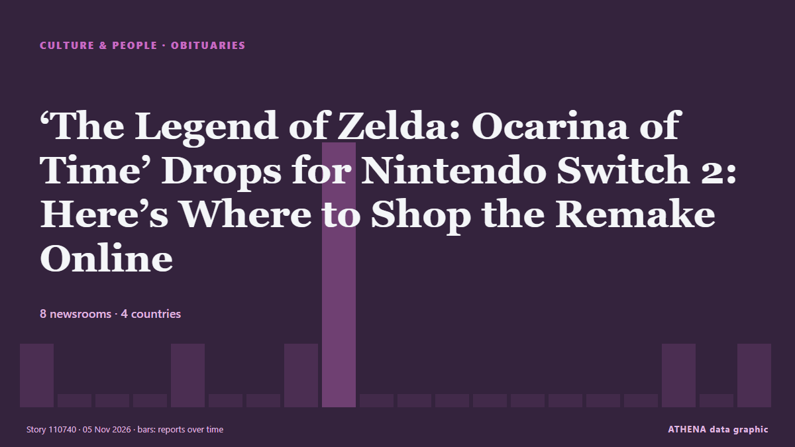

Kultur, Menschen und Lifestyle
GesponsertPräsentiert von  Cybernetics and Artificial Intelligence Lab Welcome to the Cybernetics and Artificial Intelligence Laboratory, established at the Department of Business Administration of the National and Kapodistrian University of Athens. The lab is headed by Professor Dimitrios Thomakos. The lab aims to do research that can be published in top venues. Our research uses tools and methods of Artificial Intelligence, and lies in the following areas: - Forecasting - Decision making - Cyber security - Finance We are always looking forward to collaborating with exceptional students!
Cybernetics and Artificial Intelligence Lab Welcome to the Cybernetics and Artificial Intelligence Laboratory, established at the Department of Business Administration of the National and Kapodistrian University of Athens. The lab is headed by Professor Dimitrios Thomakos. The lab aims to do research that can be published in top venues. Our research uses tools and methods of Artificial Intelligence, and lies in the following areas: - Forecasting - Decision making - Cyber security - Finance We are always looking forward to collaborating with exceptional students!
Schlagzeilen werden auf Englisch angezeigt, wie veröffentlicht.

Nachrufe‘The Legend of Zelda: Ocarina of Time’ Drops for Nintendo Switch 2: Here’s Where to Shop the Remake Online
Starting on Thursday, Nov. 5, you can revisit Hyrule with the new Zelda remake. von Billboard
| 24. Okt. | 13 |
|---|---|
| 25. Okt. | 6 |
| 26. Okt. | 52 |
| 27. Okt. | 72 |
| 28. Okt. | 75 |
| 29. Okt. | 78 |
| 30. Okt. | 88 |
| 31. Okt. | 54 |
| 1. Nov. | 50 |
| 2. Nov. | 100 |
| 3. Nov. | 117 |
| 4. Nov. | 89 |
| 5. Nov. | 99 |
| 6. Nov. | 14 |
Dolly Parton's manager moves to drop complaint against late singer's nephew
Dolly Parton's longtime manager moved Thursday to drop a complaint that accused the late singer's nephew who acted as her head of security with threatening her estate and its employees. von CBC News
Keira Knightley is ‘utterly mesmeric’, says Black Doves co-star Andrew Buchan
Buchan has reprised his role as Knightley’s on-screen husband in the Netflix thriller. von Evening Standard (London)
From Hollywood Stardom to a Rape Conviction: The Case of Actor Russell Brand
For years, Russell Brand turned irreverence into a recognizable brand. von Colombia One
Greece Welcomes EU’s First Sustainable Tourism Strategy
The Greek tourism industry association says the new framework offers an opportunity to strengthen competitiveness, develop workforce skills and ensure tourism benefits are shared more fairly with… von To Vima (English)
Book about Alexander the Great wins Baillie Gifford Prize for non-fiction
It is the first time a title covering ancient history has won the prize since the award was launched in 1999. von Evening Standard (London)
2026 Prix Goncourt: France's prestigious literary prize awarded to Philippe Jaenada
France’s prestigious literary prize “The Goncourt” was awarded on Monday to writer Philippe Jaenada. von France 24 English
Gamers set for Zelda remake to hit the shelves
Ocarina Of Time has already garnered widespread praise. von The Straits Times
‘The Odyssey’ Takes Imax to Biggest Quarterly Revenue to Date
After a record-breaking summer season, Imax swung to its best-ever revenue and profits during the third quarter of 2026. von Variety
'Godzilla Minus Zero2 gets loud applause at Tokyo film festival
Since the release of Godzilla Minus One in 2023, things have gotten a bit crazy... von Empire
Take care not to demonise AI, says music industry boss
Guy Moot said he had not ‘seen huge AI hits yet’. von The Irish News (Belfast)
Texas’ New Attorney General Nathan Johnson Is a Former ‘Dragon Ball Z’ Composer
Johnson composed the musical scores for 67 episodes and five movies. von Billboard
Oman promotes tourism at World Travel Market
LONDON: The Sultanate of Oman, represented by the Ministry of Heritage and Tourism, is participating in the World Travel Market (WTM) in London, which runs until Thursday.The Sulta... von Oman Observer
Bethel SDA Osu hosts third edition of ‘The King Is Coming’ concert
Bethel Seventh-day Adventist Church, Osu, will host the third edition of its The King Is Coming concert on Saturday, November 7, 2026, under the theme “Babylon Is Fallen”. von MyJoyOnline
CMAT releases Christmas song with Elton John
Elton John has teamed up with CMAT for a new version of his festive hit single Step Into Christmas. von RTÉ News
4 bomb-threatened planes prepare to land in Prague: Czech police
The sandwich chain’s new regional partner plans 300 openings across five countries, with a Prague restaurant expected next year. von Expats.cz
ASADOR ETXEBARRI IS NAMED NO.1 IN THE LIST OF THE 50 BEST RESTAURANTS 2026
This Wednesday, Oct. 4, the The 50 Best Restaurants gala will take place in Lima, Peru. von Colombia One
Tengku Puteri Zainah, former wife of Najib, dies at 70
KUANTAN, Nov 5 — Tengku Puteri Zainah Tengku Eskandar, the mother of Pahang Investment, Industry, Science, Technol... von Malay Mail
At ‘China’s Hollywood,’ visitors become stars as consumers spend more on experiences
Since the experience launched in August, Hengdian World Studios said more than 2,000 people had taken part, with bookings full on most days. von CNA (Channel NewsAsia)
PM Mitsotakis in Discussion With Photographer Platon Says Elections Cannot Be ‘Bought,’ Regardless of Wealth
Artificial intelligence, the power of technology and the need for oversight were at the centre of a discussion between Prime Minister Kyriakos Mitsotakis and internationally renowned photographer… von The National Herald
Makhadzi Stuck in Botswana Until 5th November
South African musician Makhadzi remains unable to leave Botswana as a P500,000 legal dispute with promoter Gilbert PP Seagile heads to court on 5 November, with her lawyers challenging the order… von The Botswana Gazette
Johnny Depp teases possible return as Jack Sparrow in ‘Pirates of the Caribbean 6’
Johnny Depp is finally sounding off about the possibility of returning as Jack Sparrow in “Pirates of the Caribbean 6.” Speaking to Entertainment Tonight on his “Ebenezer” press tour, the Oscar… von Variety
US copyright lawsuit over BTS song 'Swim' dropped
American songwriters who earlier claimed that South Korean superband BTS' chart-topping song "Swim" was copied from their own demo have withdrawn their claims in a US lawsuit, a report showed… von Korea Herald
Disney’s ‘The Remarried Empress’ Is Stunning, But A Very Slow Burn
This post contains spoilers of Disney+ /Hulu's anticipated Korean drama, The Remarried Empress. von Forbes Business
Ben Wang Circling Iceman Role In Marvel’s ‘X-Men’
EXCLUSIVE: Ahead of the release of The Hunger Games: Sunrise on the Reaping, where he plays District 12 tribute Wyatt Callow, Ben Wang has entered talks to play Iceman in Marvel Studios’ new X-Men… von Deadline
‘Red, White & Royal Blue’ Author Responds To Texas Going Blue In Midterms: “It Was All In The Binder”
Texas made history Tuesday night during the midterms when James Talarico became the state’s first Democratic Senator since 1988, defeating Republican Ken Paxton. von Deadline
John Frieda's iconic Frizz Ease range made him a household name - here's the product that started it all
John Frieda's name became synonymous with smooth, manageable hair thanks to his iconic Frizz Ease range. von The Scotsman
‘Beef’ Creator Lee Sung Jin Launches Production Company, Plans Ali Wong Limited Series
Hyunji Ward will run Lee's Lila Pictures, which also has a Gene Hong drama series in development. von The Hollywood Reporter
Wicker movie review: Olivia Colman, Alexander Skarsgard shine in a strange, wondrous fable
Directed and written by Alex Huston Fischer and Eleanor Wilson, the film stars Olivia Colman and Alexander Skarsgard. von Scroll.in
Kennedy Center Honorees Class Of 2026: Paul Anka, David Foster, Andy Garcia, David Mamet & Barbara Mandrell
One day ahead of D.C.’s Big Day, we have the latest recipients of the annual Kennedy Center Honors. von Deadline
Burnham told ‘you’re a musician’ after playing steel drum in Caribbean
The Prime Minister and Foreign Secretary Ed Miliband duetted on a version of Mary Had A Little Lamb. von The Irish News (Belfast)
Greece Begins Restoration Project for Daphni Monastery Frescoes
Greece's Ministry of Culture advances conservation and restoration plans for the historic frescoes inside UNESCO-listed Daphni Monastery in Attica. von Greek City Times
Baghdad’s first Jewish museum opens its doors
Iraq’s Jewish community has launched its first museum in a former Jewish school in Baghdad, aimed at preserving the heritage of this minority group. von Arab News
Celebrity hairstylist John Frieda dies aged 75
His death was announced on the official Instagram account for his eponymous hair salon. von The Irish News (Belfast)